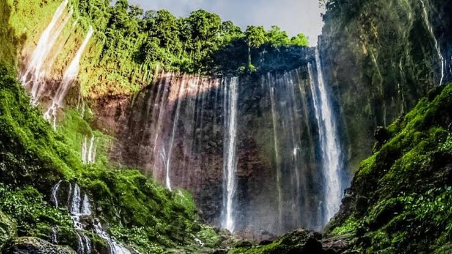
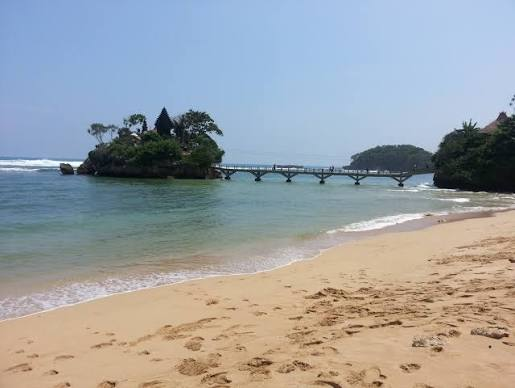
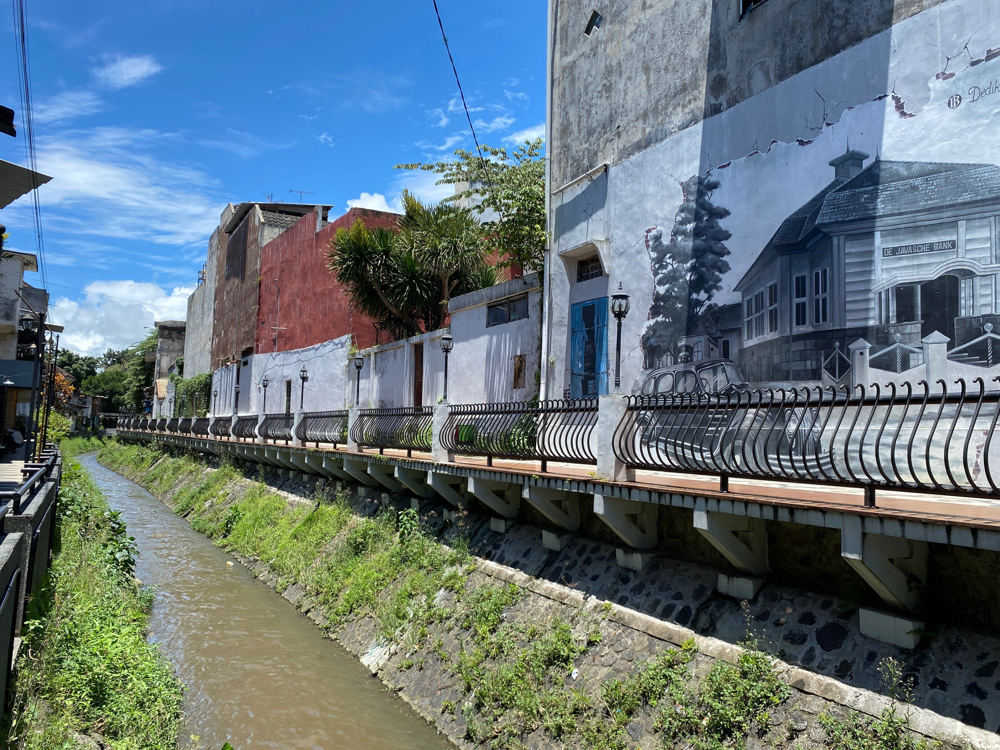

Waterfall
Tumpak Sewu
Tumpak Sewu is a stunning waterfall located in the heart of Malang. It's a popular destination for tourists and locals alike, offering a peaceful retreat with a beautiful waterfall view.
Find on Google Maps →Explore Malang
A few places to explore in and around my hometown.

Waterfall
Tumpak Sewu is a stunning waterfall located in the heart of Malang. It's a popular destination for tourists and locals alike, offering a peaceful retreat with a beautiful waterfall view.
Find on Google Maps →
Beach
Pantai Balekambang is a great place to relax and enjoy the sea breeze, with clear waters and soft sand.
Find on Google Maps →
Heritage
Kampoeng Heritage Kayutangan is a village that showcases the cultural heritage of Malang. Visitors can experience the local way of life, enjoy traditional performances, and explore the historic architecture.
Find on Google Maps →